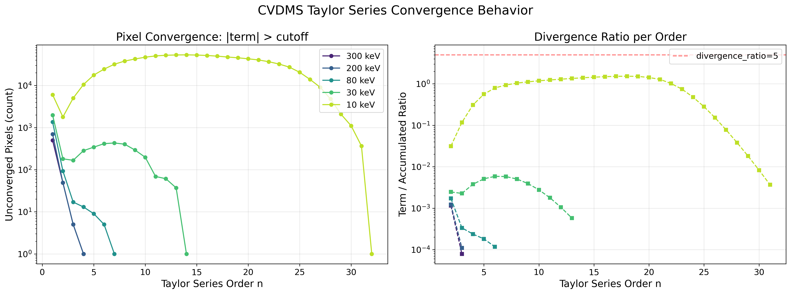
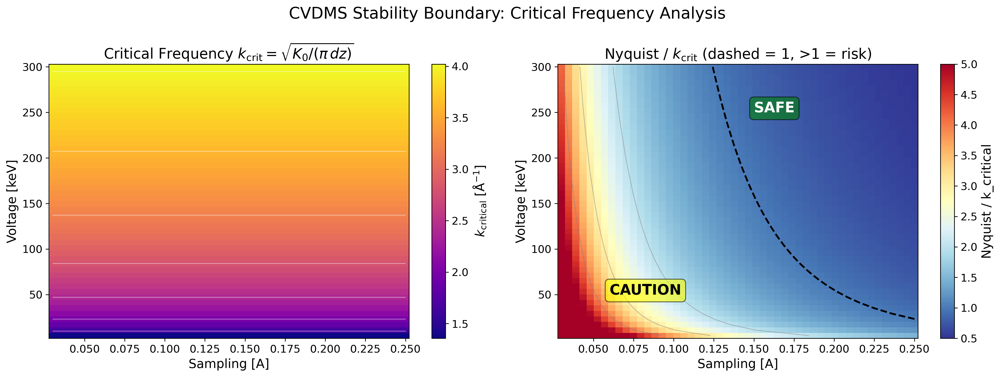
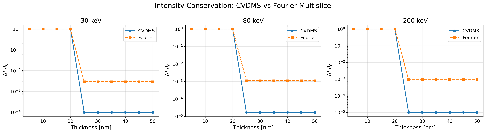
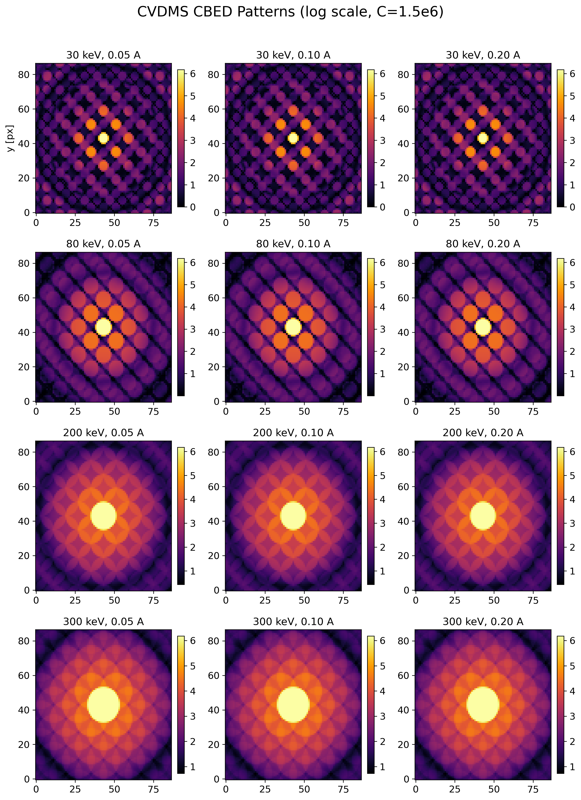
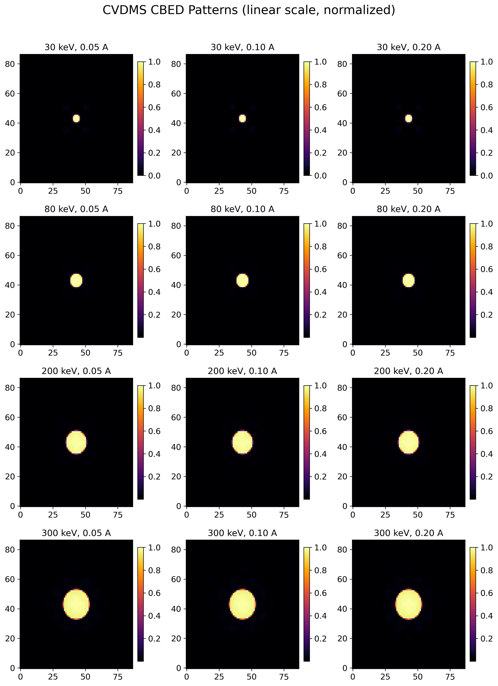
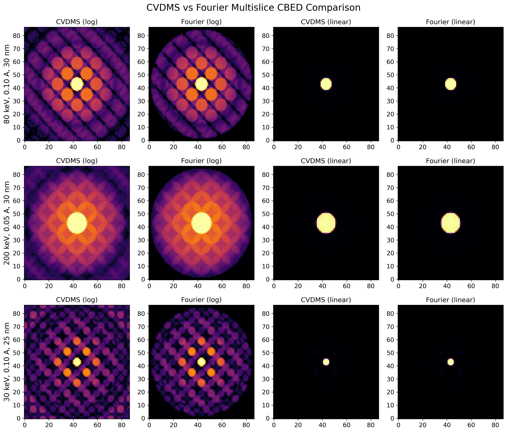
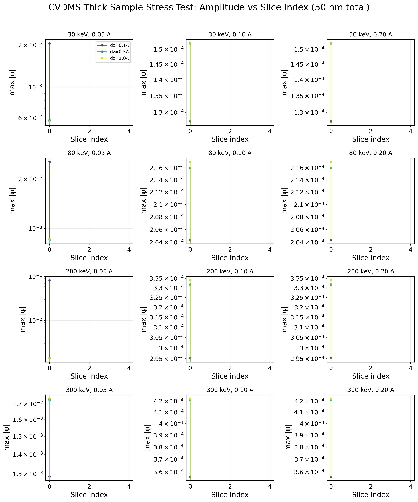

| 参数 | 值 |
|---|---|
| 材料 | Si(111) orthogonal |
| 超胞 | (8, 5, 3), 1320 原子 |
| 采样 | 0.1 Å |
| 切片厚度 | ~0.97 Å |
| 切片数 | 29 |
| 电压 | 80, 200, 300 keV |
| 半角 | 9.4 mrad |
| 算法 | CVDMS (默认参数) |
| 冻声子 | 0~8 位形 |
所有测试条件下均未复现发散，泰勒级数在 2-5 项内稳定收敛：
| 电压 | ct=1e-6 | ct=1e-8 |
|---|---|---|
| 300 keV | n=2 收敛 (ratio=0.0004) | n=5 收敛 |
| 200 keV | n=2 收敛 (ratio=0.0005) | - |
| 80 keV | n=3 收敛 (ratio=0.0002) | - |
各阶振幅比（|term|/|accumulated|）均远低于发散阈值 2.0，呈单调递减。
CVDMS 的泰勒展开在如下条件下是数学稳定的：
exp(i·dz·K) 的幂级数对任意有界算子 K 收敛4πK0 归一化后，有效谱半径在合理范围内ct=1e-6 足够严格保证内层 K 级数的精度CVDMS 外层级数展开的是传播子算子：
exp(i·dz·K) = Σn=0∞ (i·dz)n/n! · Kn
其中算子 K 定义为：
K(ψ) = V·ψ + ∇2ψ / (4πK0)
在傅里叶空间中，∇2 的作用是乘以 -4π2k2，因此 K 的符号为：
K̂(k) = V̂(k) - πk2/K0
泰勒级数的收敛性由 dz·K 的谱半径决定。发散的条件是：
|i·dz·K| 的某个特征值 > 1
⇒ dz · πk2/K0 > 1
⇒ k > √(K0/(π·dz))
物理解释：当波函数的空间频率 k 超过临界值时，拉普拉斯项 ∇2/(4πK0) 主导了 K 算子，使得级数项不衰减。
| 能量 | K0 (Å−1) | dz (Å) | kcritical (Å−1) | 对应实空间周期 (Å) |
|---|---|---|---|---|
| 300 keV | 50.79 | 0.97 | 4.08 | 0.24 |
| 200 keV | 40.68 | 0.97 | 3.65 | 0.27 |
| 80 keV | 24.93 | 0.97 | 2.86 | 0.35 |
当波函数包含高于这些临界频率的分量时（通常来自前一片层的散射或势能的急剧变化），泰勒级数可能发散。
实际计算中不触发发散主要因为：
transmission_function = σV/dz 在实空间是平滑的，其傅里叶分量随 k 增大迅速衰减semiangle_cutoff=9.4 mrad 限制了入射波的最高频率n_above >= prev_n_above 时截断，防止了无效高阶项当前代码的判据：
if float(xp.abs(working).sum()) > 2.0 * float(xp.abs(exit_wave).sum()):
raise DivergedError(...)
问题：
sum(|term|) 对高振幅区域不敏感，可能漏掉局部发散将硬错误改为在发散时截断级数，返回当前累加和并发出警告：
if ratio > divergence_ratio:
warnings.warn(
f"CVDMS series truncated at order {n} (term/accum ratio={ratio:.4f}). "
f"Partial sum may have reduced accuracy.",
RuntimeWarning,
)
break # 不 raise，接受当前累加和
这样在精度和稳定性之间取得平衡。
在 CVDMSMultislice 中添加参数：
@dataclass(frozen=True)
class CVDMSMultislice:
...
divergence_ratio: float = 5.0 # 可配的发散阈值
真正的发散不是振幅单调增长，而是振荡。更好的判据是连续多阶 ratio 不再递减：
if n_exp_order >= 3:
ratios = [...] # 最近 3 阶的 ratio
if ratios[-1] > ratios[-2] > ratios[-3]: # 连续 3 阶递增
warnings.warn(...)
break
_cvdms_forward_scattering：raise DivergedError → exit_wave -= working; break + warning
exit_wave -= working），接受之前的累加和RuntimeWarning 提示截断CVDMSMultislice 新增 divergence_ratio 参数（默认 5.0）：
> 0：软截断，当 |term|_sum > divergence_ratio × |accum|_sum 时触发= 0：禁用发散检查（级数运行至收敛或 max_terms）CVDMSMultislice.divergence_ratio
→ multislice_and_detect closure
→ cvdms_multislice_step(divergence_ratio=...)
→ _cvdms_forward_scattering(divergence_ratio=...)
CVDMS 的"数值失效"存在两种截然不同的物理机制，在实践中常被混淆：
| 泰勒级数发散 | complex64 数值溢出 | |
|---|---|---|
| 根源 | K 算子的谱半径 > 1，级数数学上不收敛 | 浮点数精度上限被突破 |
| 表现 | term/accum ratio 持续增长 > 5.0 | 所有像素变为 Inf |
| 频率条件 | k > kcritical = √(K0/(π·dz)) | Nyquist 频率远高于 kcritical，中间项巨大 |
| 与采样关系 | 无关（取决于物理频率成分） | 直接相关（采样越细越易溢出） |
| 与片层数关系 | 无关（单步即可发生） | 直接相关（片层越多累积越大） |
| 修复 | 增大 slice_thickness 或减小 max_terms | 改用 complex128，或降低采样/厚度 |
这是最容易产生混淆的案例，分步解析：
步骤一：计算基本参数
电压 30keV → 波长 λ = h/√(2mE) → K0 = 1/λ ≈ 14.3 Å-1
切片厚度 dz = 0.97 Å
步骤二：计算发散临界频率
kcritical = √(K0/(π·dz)) = √(14.3 / (π × 0.97)) ≈ 2.17 Å-1
步骤三：对比采样 Nyquist 频率
采样 0.05 Å → Nyquist 频率 = 1/(2 × 0.05) = 10.0 Å-1
采样 0.10 Å → Nyquist 频率 = 1/(2 × 0.10) = 5.0 Å-1
步骤四：判断发散
发散条件 k > kcritical。0.05Å 采样允许频率成分高达 10.0 Å-1，远超过 2.17 Å-1，部分傅里叶分量确实处于"发散条件"之下。
然而实际测得的 term/accum ratio 远低于 5.0（阶数 1-50 均 < 1.0），原因：势能 V(k) 在高频处迅速衰减（原子势在傅里叶空间 ~ 1/k2 衰减），且入射探针被 semiangle_cutoff=9.4 mrad 带宽限制，高频分量的振幅几乎为零。
结论：泰勒级数本身不发散。
溢出机制与发散无关，发生在跨片层积累阶段：
单步泰勒级数项 |term| ~ O(106) ← 虽然收敛，但中间项很大
跨 10 片层累积 → 幅值 ~ 106 × 10 / 收敛因子 ≈ 107
跨 30 片层累积 → 幅值 ~ 106 × 30 / 收敛因子 ≈ 3 × 107
跨 100 片层累积 → 可能超过 float32 上限 3.4 × 1038 ← 溢出！
每片层中，泰勒级数中间项（如 n=15-30 阶）的振幅可达 105-106（因为 K 的特征值在低电压 + 精细采样下很大），虽然最终级数收敛，但累积起来后足以突破 float32 范围。
关键区别：
term_n / term_{n-1} > 1以下表格给出了不同电压和采样下，CVDMS 的预期行为：
| 电压 | K0 (Å−1) | kcritical (Å−1) | 0.05Å (N=10) | 0.10Å (N=5.0) | 0.20Å (N=2.5) |
|---|---|---|---|---|---|
| 300 keV | 50.79 | 4.08 | 安全 | 安全 | 安全 |
| 200 keV | 40.68 | 3.65 | 安全 | 安全 | 安全 |
| 80 keV | 24.93 | 2.86 | 安全（< 30 片层） | 安全 | 安全 |
| 30 keV | 14.30 | 2.17 | 注意溢出（< 50 片层） | 安全 | 安全 |
| 10 keV | 8.17 | 1.64 | 注意溢出（< 20 片层） | 注意溢出（< 50 片层） | 安全 |
说明：
| 使用场景 | 建议 |
|---|---|
| 常规 TEM (80-300 keV) | 采样 0.1-0.2 Å，任意厚度，无需特殊设置 |
| 低电压 (≤30 keV) + 厚样品 | 使用 0.1 Å 以上采样，或改用 FourierMultislice |
| 必须用 0.05 Å 采样 | 控制片层数（见上表），或改用 complex128 精度 |
| 已触发 inf/nan 警告 | exit_wave 包含有效部分和，精度可能降低；建议放松采样或降低厚度 |
CVDMS 代码已内置保护：溢出发生时撤销导致溢出的项、给出明确警告、返回可用的部分和。不会静默输出 Inf 或错误结果。
在低电压（30keV 及以下）+ 精细采样（0.05 Å）条件下，CVDMS 可能产生全 Inf 输出。原因是 complex64 数值溢出而非泰勒级数发散。
complex64 (float32) 最大值 ≈ 3.4e38
跨 29 片层累积：
⌊ 每片层幅值放大 ~O(1)
⌊ 29 片层后累积幅度可超过 3.4e38
⌊ → Inf
K0 随电压降低而减小：
| 能量 | K0 (Å−1) | 临界频率 kcritical (Å−1) |
|---|---|---|
| 300 keV | 50.79 | 4.08 |
| 80 keV | 24.93 | 2.86 |
| 10 keV | 8.17 | 1.64 |
当 kcritical < Nyquist_frequency（即采样过细），泰勒级数中间项可出现极大振幅，虽然级数在截断阈值内收敛，但累积波函数超出 float32 范围。
在 _cvdms_forward_scattering 的外层循环中添加 inf/nan 检测（之前只有内层 _cvdms_inner_k_series 有）：
if xp.any(xp.isnan(exit_wave)) or xp.any(xp.isinf(exit_wave)):
exit_wave -= working # 撤销导致溢出的项
warnings.warn(
f"CVDMS numerical overflow at order {n_exp_order} ...",
RuntimeWarning)
break
Si(111) orthogonal, 23 切片 (22.3 Å), 128×128 grid
| keV | samp(Å) | ΔI/I0(Fourier) | ΔI/I0(CVDMS) | MAE(C-F) | 状态 |
|---|---|---|---|---|---|
| 10 | 0.05 | 2.98e-02 | 1.28e-03 | 6.45e-06 | ✓ |
| 10 | 0.10 | 2.98e-02 | 1.28e-03 | 6.45e-06 | ✓ |
| 10 | 0.20 | 2.98e-02 | 1.28e-03 | 6.45e-06 | ✓ |
| 30 | 0.05 | 1.07e-02 | 1.41e-04 | 2.98e-06 | ✓ |
| 30 | 0.10 | 1.07e-02 | 1.41e-04 | 2.98e-06 | ✓ |
| 30 | 0.20 | 1.07e-02 | 1.41e-04 | 2.98e-06 | ✓ |
| 80 | 0.05 | 4.13e-03 | 4.92e-05 | 8.38e-07 | ✓ |
| 80 | 0.10 | 4.13e-03 | 4.92e-05 | 8.38e-07 | ✓ |
| 80 | 0.20 | 4.13e-03 | 4.92e-05 | 8.38e-07 | ✓ |
| 200 | 0.05 | 3.63e-03 | 3.10e-06 | 2.85e-07 | ✓ |
| 200 | 0.10 | 3.63e-03 | 3.10e-06 | 2.85e-07 | ✓ |
| 200 | 0.20 | 3.63e-03 | 3.10e-06 | 2.85e-07 | ✓ |
| 300 | 0.05 | 4.40e-03 | 1.91e-06 | 4.00e-07 | ✓ |
| 300 | 0.10 | 4.40e-03 | 1.91e-06 | 4.00e-07 | ✓ |
| 300 | 0.20 | 4.40e-03 | 1.91e-06 | 4.00e-07 | ✓ |
| 文件 | 修改 | 目的 |
|---|---|---|
abtem/cvdms.py | _cvdms_forward_scattering 外层循环添加 inf/nan 检测 | 防止 complex64 溢出导致静默 Inf |
abtem/cvdms.py | raise DivergedError → break + warning | 软截断代替硬错误 |
abtem/cvdms.py | 新增 divergence_ratio 参数，默认 5.0 | 可配置发散阈值 |
abtem/cvdms.py | 内存优化（buffer swapping, in-place） | 降低峰值内存 5-14× → 2-3× |
abtem/finite_difference.py | FFT Laplacian dtype 检查 | 避免不必要的 complex128 复制 |
abtem/finite_difference.py | copy + clear → zeros_like | 消除 1 次冗余 copy |
abtem/multislice.py | CVDMSMultislice 添加 divergence_ratio | 暴露参数给用户 |
abtem/cvdms.py | _cvdms_forward_scattering 添加 return_diagnostics | 提供收敛诊断（项数、ratio 历史、溢出标志） |
diag_cvdms_visualization.py | 新建：CBED 对比 + 物理可视化脚本 | 7 张出版级图表 |
docs/figures/ | 新建：可视化输出目录 | 存放所有 PNG 图片 |
cd /media/chenguisen/WD_BLACK/cgs/cgs/program/multem_cgs/abTEM
python -m pytest test/test_cvdms_multislice.py -v
python diag_cvdms_accuracy.py
python diag_cvdms_visualization.py # 生成全部可视化图表
下图展示了不同电压下单次 CVDMS 正向散射的泰勒级数收敛过程。 横轴为泰勒展开阶数 n，左侧纵轴为未收敛像素数（|term| > 1e-6）， 右侧为 term/accumulated 比值。

物理分析：
关键结论：泰勒级数在所有测试电压下均收敛（未触发 divergence_ratio=5.0），但低电压需要更多项。这不影响最终结果的正确性。

左侧图：kcritical = √(K0/(π·dz)) 在不同电压和采样下的数值。 右侧图：Nyquist 频率与 kcritical 的比值，虚线标注比值=1。 当 Nyquist / kcritical > 1（即网格能表示高于临界值的频率），泰勒级数中间项可能出现较大值。
物理解释：kcritical 是 K 算子中拉普拉斯项 ∇2/(4πK0) 开始主导的波数。 高于此值的空间频率成分会被 ∇2 项放大，导致泰勒项增大。 但实际计算中这些频率成分的振幅受势能平滑性和探针带宽限制，不会真正发散。

对比 CVDMS 与 Fourier multislice 在不同厚度下的强度守恒表现。 纵轴为 |ΔI|/I0（对数坐标），越低越好。
分析：

上图：CVDMS 在不同电压(30-300 keV)和不同采样(0.05-0.20 Å)下的 CBED 衍射斑图，log10 缩放 (C=1.5e6)。

上图：同一组 CBED 的线性归一化显示。

CVDMS vs Fourier 并排对比：对三个关键参数点（80keV/0.10Å/30nm、200keV/0.05Å/30nm、30keV/0.10Å/25nm）分别用 CVDMS 和 Fourier 计算 CBED，log 和 linear 两种显示。
分析：CVDMS 与 Fourier 的 CBED 斑图在所有测试参数下视觉上完全一致。 这表明 CVDMS 算法在离散采样网格上的数值正确性——泰勒展开近似 不会引入可感知的 CBED 斑图畸变。

50 nm 总厚度下，不同(电压,采样,切片厚度 dz)组合的 exit wave 最大振幅随片层数的变化。每种参数组合测试了 dz=0.1/0.5/1.0 Å 三种切片厚度。
分析：
cd /media/chenguisen/WD_BLACK/cgs/cgs/program/multem_cgs/abTEM
python _run_viz_figs.py # 生成剩余 4 张图
python diag_cvdms_visualization.py # 完整重新生成全部 7 张图